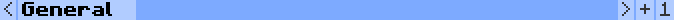
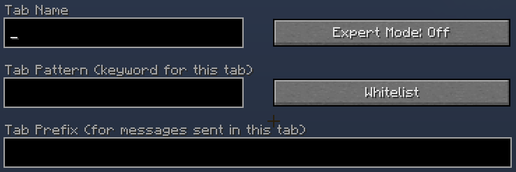

SimpleTabs
SimpleTabs is a Minecraft mod adding easy-to-use tabs to the chat.It is currently available for Minecraft versions 1.8.9, 1.9.4, 1.10.2, 1.11.2 and 1.12.2.
Features
- Seperate chat tabs
- Regular expression support and simple keyword support
- Prefixes for sent messages on a per-tab basis
- Unread tabs are highlighted
- Seperate tab groups for per-server configurations
- Blacklist and whitelist patterns
Installation
- Install Minecraft Forge.
- Download the release for your minecraft version (see section below).
- Put the downloaded JAR file into your
mods/directory.
Usage
When you first install SimpleTabs and open your chat you will see a few buttons below the chat window. The button showing a number on the very right displays the number of the current tab group. Tab groups provide a way for you to seperate tab settings for different servers. Clicking on this button cycles through the existing tab groups or creates a new one.
The navigation buttons < and > serve for navigation through pages of tabs in a single tab group.
The plus button adds a new tab in the current tab group and opens the editor for it.
Finally, there is a button for each tab on the current page of the active tab group. Clicking on the tab activates the chat of this tab. Additionally, right-clicking on the tab opens the editor for the clicked tab, clicking on a tab with the middle mouse button deletes the tab. Unread tabs are highlighted in red and the currently active tab is printed in bold letters.
For adding tabs and editing tabs, the tab editor is used.
You can enter the name of a tab in the top-left text field of the editor.
The text field below that contains the pattern for the tab. In the default mode the pattern is a single keyword that has to be present in a chat message for the message to be displayed in the tab.
The button in the top-right corner toggles between default mode and expert mode. In expert mode the pattern is not a single keyword but a Java regular expression.
The button below that toggles the tab between whitelist mode and blacklist mode. In whitelist mode, only messages matching the pattern are displayed in the tab. On the other hand in blacklist mode only messages that are not matching the pattern are displayed in the tab.
Finally there is the text field for the prefix. The prefix will be added in front of all regular sent chat messages (i.e. not commands). For example this can be used to automatically add a party chat command in a party chat tab!
Releases
The number in parenthesis specifies the Forge build the release was tested with.
Release 1.1.0 for Minecraft 1.12.2 (#2623)
Release 1.1.0 for Minecraft 1.11.2 (#2588)
Release 1.1.0 for Minecraft 1.10.2 (#2511)
Release 1.1.0 for Minecraft 1.9.4 (#2051)
Release 1.1.0 for Minecraft 1.8.9 (#2318)